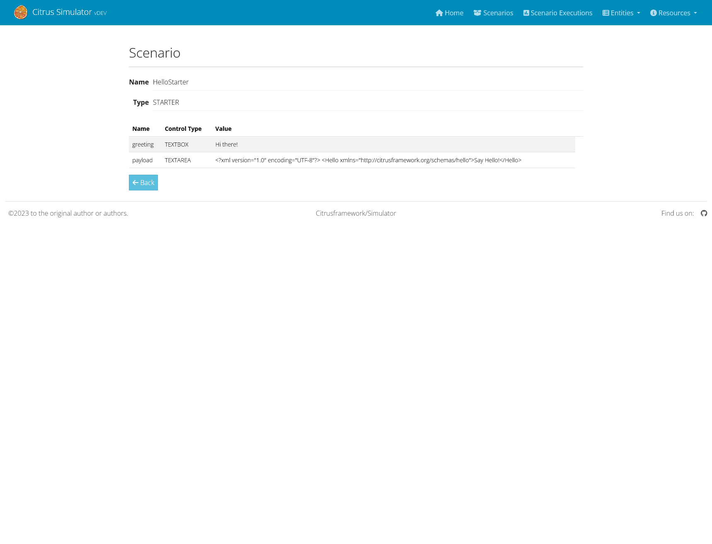

Version: 3.1.1

Introduction
The Citrus Framework Simulator is a comprehensive tool that allows for the simulation of various messaging transports including HTTP REST, SOAP WebService, JMS, RMI, mail messaging, and more. This simulator stands out with its robust server APIs that interact with client requests, delivering predefined messages tailored to specific scenarios. The power of the simulator’s response logic cannot be overstated; it is designed to emulate any server interface effortlessly.
Citrus Spring-Boot Simulator
Utilizing the synergy of Spring Boot and the Citrus testing framework, the citrus-spring-boot-simulator empowers you to craft your simulator scenarios using either Java or XML.
Each interaction with the simulator is logged in an internal database, accessible for review through the REST API or the web UI.
We welcome your feedback and contributions with great appreciation!
Project Status
We are proud to announce that the simulator application is stable and reliable for general use. However, it is important to note that certain experimental features are included as part of our commitment to innovation. These features are introduced with "feature flags" and are still in the developmental phase:
WSDL Generated Scenarios: Automatically create simulator scenarios from a WSDL file.
Swagger Generated Scenarios: Automatically create simulator scenarios from a Swagger API file.
These features are evolving, and with the valuable insights we receive from our community, we are optimistic that they will achieve stability in due course.
Prerequisites
Before embarking on your journey with the simulator application, ensure you meet the following prerequisites:
Java 17
The simulator is built with Java 17 and is compatible with versions up to Java 21. As such, Java 17 or later must be installed on your machine. Confirm that your Java Development Kit (JDK) is properly installed and configured with the following command in a new terminal window:
java -versionBrowser Compatibility
The simulator boasts a compact web interface that springs to life upon startup. You can access it on the root URL of your simulator application.
The citrus-simulator-ui module enriches this experience further with a sophisticated Angular-based application.
This UI is best accessed through a web browser .
It’s important to note that we do not perform cross-browser testing during our pipeline.
Thus, we cannot guarantee compatibility in all browsers.
Development and testing are primarily done on Chrome and Firefox, which are likely to yield the best experience.
Compatibility Matrix
The below table depicts the compatible version ranges of the citrus-simulator, the citrusframework and Spring Boot.
The compatible java version is derived from the combination of the underlying frameworks.
Simulator |
Citrus |
Spring-Boot |
Java |
|
> |
> |
17 to 21 |
|
< |
< |
8 to 11 |
Installation
The Citrus simulator is a web application that leverages Spring Boot and Angular. It can be run as a Java application on your local machine or as a container/pod in Docker, Kubernetes, or OpenShift.
While any build system can be used to build the simulator, we will illustrate how to set up the project using Gradle and Maven.
Build with Gradle
Gradle uses Groovy-based build scripts which we need to add when starting a new simulator project.
buildscript {
repositories {
mavenCentral()
}
dependencies {
classpath("org.springframework.boot:spring-boot-gradle-plugin:3.1.5")
}
}
apply plugin: 'java'
apply plugin: 'eclipse'
apply plugin: 'idea'
apply plugin: 'org.springframework.boot'
jar {
group = "org.citrusframework.simulator"
baseName = 'citrus-simulator-sample'
version = '1.0.0'
}
repositories {
mavenCentral()
}
sourceCompatibility = 17
targetCompatibility = 17
dependencies {
implementation("org.springframework.boot:spring-boot-starter-web")
implementation("org.citrusframework:citrus-spring-boot-simulator:3.0.0")
testImplementation("junit:junit")
}The above build script will set up the necessary Spring Boot dependencies and include the basic citrus-spring-boot-simulator dependency.
With the Gradle build complete, we’re now ready to build and run the simulator.
Writing your first Scenario
Let’s add a basic Spring Boot main class to our project next.
package org.citrusframework.simulator;
import org.springframework.boot.SpringApplication;
import org.springframework.boot.autoconfigure.SpringBootApplication;
@SpringBootApplication
public class Simulator {
public static void main(String[] args) {
SpringApplication.run(Simulator.class, args);
}
}Additionally, we’ll implement a default scenario that will be triggered by incoming requests.
package org.citrusframework.simulator;
import org.citrusframework.simulator.scenario.AbstractSimulatorScenario;
import org.citrusframework.simulator.scenario.Scenario;
import org.citrusframework.simulator.scenario.ScenarioRunner;
import org.springframework.http.HttpStatus;
@Scenario("Default")
public class DefaultScenario extends AbstractSimulatorScenario {
@Override
public void run(ScenarioRunner scenario) {
scenario.$(scenario.http()
.receive().post());
scenario.$(scenario.http()
.send()
.response(HttpStatus.OK)
.message()
.body("<DefaultResponse>This is a default response!</DefaultResponse>"));
}
}This default scenario will respond with an Http 200 OK.
To build and run the simulator application, use the following commands:
./gradlew build bootRunUpon execution, the application should start up and the console will display log output detailing the process. The web server should be active within seconds. After the application is running, open your browser and go to http://localhost:8080 to see the basic simulator user interface. For a more detailed interface, please consult the chapter on the user interface.
The REST default scenario that we’ve included is reachable at http://localhost:8080/services/rest/, where you’ll encounter the default message Welcome to the Citrus simulator.
You are now prepared to utilize the Citrus simulator. The next steps involve comprehending the concepts and crafting some simulator scenarios.
Build with Maven
Using Maven, you can easily incorporate the simulator into your project. Maven automatically manages the download of all necessary dependencies and project artifacts. Once configured, the simulator can be executed using Spring’s embedded web servers.
Below is a sample pom.xml for a Maven project configured as a Spring Boot application.
<?xml version="1.0" encoding="UTF-8"?>
<project xmlns="http://maven.apache.org/POM/4.0.0"
xmlns:xsi="http://www.w3.org/2001/XMLSchema-instance"
xsi:schemaLocation="http://maven.apache.org/POM/4.0.0 http://maven.apache.org/xsd/maven-4.0.0.xsd">
<modelVersion>4.0.0</modelVersion>
<groupId>org.citrusframework</groupId>
<artifactId>citrus-simulator-sample</artifactId>
<version>1.0.0</version>
<name>${project.artifactId}</name>
<properties>
<java.version>17</java.version>
<project.build.sourceEncoding>UTF-8</project.build.sourceEncoding>
<project.reporting.outputEncoding>UTF-8</project.reporting.outputEncoding>
<citrus.simulator.version>3.0.0</citrus.simulator.version>
<spring.boot.version>3.1.5</spring.boot.version>
</properties>
<dependencyManagement>
<dependencies>
<dependency>
<groupId>org.springframework.boot</groupId>
<artifactId>spring-boot-dependencies</artifactId>
<version>${spring.boot.version}</version>
<type>pom</type>
<scope>import</scope>
</dependency>
</dependencies>
</dependencyManagement>
<dependencies>
<!-- Citrus Simulator -->
<dependency>
<groupId>org.citrusframework</groupId>
<artifactId>citrus-spring-boot-simulator</artifactId>
<version>${citrus.simulator.version}</version>
</dependency>
<!-- Other dependencies -->
</dependencies>
<build>
<plugins>
<plugin>
<groupId>org.apache.maven.plugins</groupId>
<artifactId>maven-compiler-plugin</artifactId>
<version>3.8.1</version>
<configuration>
<source>${java.version}</source>
<target>${java.version}</target>
<encoding>${project.build.sourceEncoding}</encoding>
</configuration>
</plugin>
<plugin>
<groupId>org.springframework.boot</groupId>
<artifactId>spring-boot-maven-plugin</artifactId>
<version>${spring.boot.version}</version>
<executions>
<execution>
<goals>
<goal>repackage</goal>
</goals>
</execution>
</executions>
<configuration>
<fork>true</fork>
</configuration>
</plugin>
</plugins>
</build>
</project>The pom.xml file above sets up the Spring Boot application and includes the Citrus Simulator dependency. With this setup complete, the simulator is ready to be built and run.
That’s it, you’re read to write your first Scenario.
To build and run the simulator with Maven, execute the following commands from the command line:
mvn clean install
mvn spring-boot:runUpon execution, the application should start up and the console will display log output detailing the process. The web server should be active within seconds. After the application is running, open your browser and go to http://localhost:8080 to see the basic simulator user interface. For a more detailed interface, please consult the chapter on the user interface.
The REST default scenario that we’ve included is reachable at http://localhost:8080/services/rest/, where you’ll encounter the default message Welcome to the Citrus simulator.
You are now prepared to utilize the Citrus simulator. The next steps involve comprehending the concepts and crafting some simulator scenarios.
Maven Archetypes
Maven archetypes are templates that can quickly set up a new project structure for you. When starting a new Citrus Simulator project, using a Maven archetype can save you time and effort.
To generate a new project using the Citrus Simulator archetype, run the following command in your terminal:
mvn archetype:generate -B \
-DarchetypeGroupId=org.citrusframework.archetypes \
-DarchetypeArtifactId=citrus-simulator-archetype-rest \
-DarchetypeVersion=3.0.0 \ (1)
-DgroupId=org.citrusframework.simulator \
-DartifactId=citrus-simulator-rest \
-Dversion=1.0.0| 1 | Replace 3.0.0 with the version of Citrus Simulator you wish to use. |
The -B flag indicates batch mode, which makes the command non-interactive.
If you omit this, Maven will interactively ask you for any required values not provided as -D options.
Upon executing the command, Maven will generate a new project based on the specified archetype.
This project will be placed in a new directory corresponding to the artifactId you provided.
Change into this directory to proceed with building your new simulator project.
Citrus provides various archetypes for different types of simulators, each tailored to a specific protocol or data format:
citrus-simulator-archetype-rest
|
Initializes a sample HTTP REST simulator. |
citrus-simulator-archetype-ws
|
Sets up a SOAP web service simulator sample. |
citrus-simulator-archetype-jms
|
Creates a JMS simulator sample. |
citrus-simulator-archetype-mail
|
Generates a mail simulator sample. |
citrus-simulator-archetype-swagger
|
(Experimental) Auto-generates a simulator from a Swagger OpenAPI specification. |
citrus-simulator-archetype-wsdl
|
(Experimental) Auto-generates a simulator from a SOAP WSDL specification. |
Choose the archetype that best matches the needs of your project.
Development
With the project’s build and source code established, you can begin coding your simulator scenarios. This project is a standard Java application, which you can develop within your preferred Java IDE. Tools like Maven or Gradle are used to compile and package your simulator into an executable artifact, typically a Spring Boot executable jar.
To optimize your development process, consider using Spring Boot DevTools. This library provides additional development-time features that can greatly enhance your productivity:
-
Automatic restart: Any changes to your code trigger a quick application restart, making it faster to see the changes in action without manually restarting the server.
-
LiveReload: Spring Boot DevTools includes a LiveReload server that can automatically trigger a browser refresh when a resource is changed.
-
Property defaults: DevTools sets sensible development-time property defaults, reducing the need for manual configuration.
-
Remote development: It is possible to remotely debug Spring applications.
To use DevTools, include the following dependency in your build configuration:
<dependencies>
<!-- Other dependencies... -->
<dependency>
<groupId>org.springframework.boot</groupId>
<artifactId>spring-boot-devtools</artifactId>
<scope>runtime</scope>
<optional>true</optional>
</dependency>
</dependencies>With Spring Boot DevTools included, every time you compile your code, the application will restart, recognizing your changes immediately. This makes the development loop much faster and feedback-oriented.
Ensure that your IDE is configured to build the project automatically on each save. If you’re using an IDE like Eclipse or IntelliJ IDEA, they have built-in support for automatic compilation which integrates seamlessly with DevTools.
Remember to disable the DevTools in production environments, as its features are only beneficial in a development setting and may have performance implications for production deployments.
With your development environment optimized, you can now focus on adding functionality and creating comprehensive simulation scenarios for thorough testing and robust service emulation.
Building a Docker Container
Containerizing your Spring Boot application using Docker simplifies deployment and ensures consistency across different environments. There is lots of documentation about this process available online. It’s best to consider multiple sources, especially for a production build! To get started, here’s how to package your Citrus Simulator into a Docker container.
Creating a Dockerfile
The first step in containerizing your application is to create a Dockerfile.
This text document contains all the commands a user could call on the command line to assemble an image.
Below is a simple Dockerfile to get you started:
# Start with a base image containing Java runtime
FROM openjdk:17-jdk-slim as build
# The application's jar file
ARG JAR_FILE=target/*.jar
# Add the application's jar to the container
COPY ${JAR_FILE} app.jar
# Run the jar file
ENTRYPOINT ["java","-jar","/app.jar"]This Dockerfile starts with a lightweight JDK 17 image, copies your application’s JAR file into the image, and sets the entry point to run the JAR file.
Building the Docker Image
After creating your Dockerfile, use the Docker CLI to build the image:
docker build -t citrus-simulator .The -t flag tags your Docker image, so it’s easier to find later.
The . at the end of the command tells Docker to look for the Dockerfile in the current directory.
Running the Docker Container
Once the image is built, you can run it as a container:
docker run -p 8080:8080 citrus-simulatorThe -p flag publishes a container’s port to the host.
This command maps the application’s port 8080 to the same port on the host machine, so you can access the application through http://localhost:8080.
Best Practices
-
Multi-stage Builds: For a more efficient build process, especially if you need to build the JAR file within Docker, consider using a multi-stage Dockerfile.
-
Avoid running as root: For security reasons, it’s best practice to not run the application as the root user. You can create a user within your Dockerfile and run the application as this user.
-
Configuration: Externalize your configuration. For instance, you can use environment variables to configure your application for different environments.
-
Health checks: Implement health checks in your application and add a
HEALTHCHECKinstruction to your Dockerfile. -
Logs: Make sure your application logs to the console so that Docker can capture the logs.
By following these steps and best practices, you will have a Docker container for your Citrus Simulator that can be deployed to any environment that supports Docker.
1. Concepts
The Citrus simulator’s primary focus is to provide a simple means to simulate one or more endpoints (HTTP, JMS, SMTP, etc). Once the simulator is up and running, it waits for an incoming request (JSON, SOAP, XML, etc.) to arrive at any of its configured endpoints and reacts accordingly. The simulator examines the incoming request and determines which simulator scenario should be executed for handling the request. Typically, the selected scenario creates a response message to send back to the calling client.
A scenario mapper is used to help the simulator determine the correct scenario to be executed. Different scenario mappers are supported that use the request header data or payload data to determine the appropriate scenario to run.
A simulator scenario is capable of handling one or more request messages. When executed, it receives the request and can return an appropriate response message to the calling client. By defining multiple simulator scenarios, the Citrus simulator is able to respond to different requests accordingly.
A simulator scenario is composed of one or more actions. For the most trivial scenarios, there is generally an action for receiving a request and an action for sending a response. Because the Citrus simulator has access to the underlying Citrus framework functionality, you can access a wide range of actions that are available within the Citrus framework and use these when configuring a scenario.
To keep an eye on what the simulator is doing, what requests were received or sent, or what scenarios were executed, a user interface is provided. In addition to seeing what is going on, it is also possible to trigger scenarios manually.
1.1. Simulator Application
The simulator is a standard Spring Boot application. This means we have a main class that loads the Spring Boot application. If you haven’t set one up already, see how to get started with Gradle or Maven.
This class is the main entrance for all configuration and customization statements. By default, REST support is enabled with all configuration needed. You can enable or disable the message transport support for different technologies via application properties.
citrus.simulator.rest.enabled=true
citrus.simulator.jms.enabled=true
citrus.simulator.ws.default-support=true
citrus.simulator.ws.client.enabled=true
citrus.simulator.endpoint.enabled=true
spring.webservices.autoconfiguration.enabled=falseWhen enabled, the simulator’s autoconfiguration for this specific message transport is activated, and all required beans and configuration are loaded at startup.
citrus.simulator.rest.enabled
|
Enables Http REST support |
citrus.simulator.ws.enabled
|
Enables WS support |
citrus.simulator.ws.client.enabled
|
Enables SOAP web services client support |
citrus.simulator.jms.enabled
|
Enables JMS support |
citrus.simulator.endpoint.enabled
|
Enables generic endpoint component support |
spring.webservices.autoconfiguration.enabled
|
Enables automatic Spring WS configuration. |
You can also combine message transports in the simulator application, although this feature is of experimental nature up to now.
1.2. Simulator Properties
The simulator is capable of loading configuration from system properties, environment variables, and property files.
First, the default Spring Boot properties configuration mechanism is supported.
Following from that, you can add properties to the application.properties file in your project resources to adjust simulator behavior.
citrus.simulator.rest.enabled=true
citrus.simulator.default-timeout=10000
citrus.simulator.template-path=com/company/simulator/templatesThe available simulator properties are grouped into the following configuration classes:
org.citrusframework.simulator.config.SimulatorConfigurationProperties
|
|
org.citrusframework.simulator.http.SimulatorRestConfigurationProperties
|
|
org.citrusframework.simulator.ws.SimulatorWebServiceConfigurationProperties
|
|
org.citrusframework.simulator.ws.SimulatorWebServiceClientConfigurationProperties
|
|
org.citrusframework.simulator.jms.SimulatorJmsConfigurationProperties
|
|
There are several properties that you can use to customize the simulator behavior, such as:
citrus.simulator.template-path
|
Default path to message payload template files. |
citrus.simulator.default-scenario
|
Default scenario name. |
citrus.simulator.default-timeout
|
Timeout when waiting for inbound messages. |
citrus.simulator.template-validation
|
Enable/disable schema validation. |
citrus.simulator.exception-delay
|
Default delay in milliseconds to wait after uncategorized exceptions. |
citrus.simulator.executor-threads
|
The number of threads available for parallel scenario execution. |
citrus.simulator.rest.url-mapping
|
Handler adapter URL mapping for inbound requests. |
citrus.simulator.ws.servlet-mappings
|
Message dispatcher servlet mappings for inbound SOAP requests. |
citrus.simulator.jms.inbound-destination
|
JMS destination name to consume inbound messages from. |
citrus.simulator.jms.reply-destination
|
JMS destination name to publish reply messages to. |
Please refer to the respective configuration property classes to see in detail what property settings are supported.
1.2.1. System Properties
In addition to the default Spring Boot property replacement, the simulator also supports system properties and environment variables. The properties include:
citrus.simulator.configuration.class
|
Java configuration class that is automatically loaded (default is org.citrusframework.simulator.SimulatorConfig). |
citrus.simulator.template-path
|
Default path to message payload template files. |
citrus.simulator.default-scenario
|
Default scenario name. |
citrus.simulator.default-timeout
|
Timeout when waiting for inbound messages. |
citrus.simulator.template-validation
|
Enable/disable schema validation. |
citrus.simulator.exception-delay
|
Default delay in milliseconds to wait after uncategorized exceptions. |
citrus.simulator.executor-threads
|
The number of threads available for parallel scenario execution. |
citrus.simulator.rest.url-mappings
|
Handler adapter URL mappings for inbound requests. |
citrus.simulator.ws.servlet-mappings
|
Message dispatcher servlet mappings for inbound SOAP requests. |
citrus.simulator.jms.inbound-destination
|
JMS destination name to consume inbound messages from. |
citrus.simulator.jms.reply-destination
|
JMS destination name to publish outbound messages to. |
You can set these properties as system properties when starting the Spring Boot application, or you can add the properties to the default
Spring Boot application properties file, application.properties, located as a resource file in your project.
The simulator will automatically load these properties during startup and respect this configuration.
1.2.2. Environment Variables
The same settings that are editable via system properties are also accessible via environment variables. This is extremely helpful when running the simulator in containerized infrastructure such as Docker or Kubernetes.
CITRUS_SIMULATOR_CONFIGURATION_CLASS
|
Java configuration class that is automatically loaded (default is org.citrusframework.simulator.SimulatorConfig). |
CITRUS_SIMULATOR_TEMPLATE_PATH
|
Default path to message payload template files. |
CITRUS_SIMULATOR_DEFAULT_SCENARIO
|
Default scenario name. |
CITRUS_SIMULATOR_DEFAULT_TIMEOUT
|
Timeout when waiting for inbound messages. |
CITRUS_SIMULATOR_TEMPLATE_VALIDATION
|
Enable/disable schema validation. |
CITRUS_SIMULATOR_EXCEPTION_DELAY
|
Default delay in milliseconds to wait after uncategorized exceptions. |
CITRUS_SIMULATOR_EXECUTOR_THREADS
|
The number of threads available for parallel scenario execution. |
CITRUS_SIMULATOR_REST_URL_MAPPINGS
|
Handler adapter URL mappings for inbound requests. |
CITRUS_SIMULATOR_WS_SERVLET_MAPPINGS
|
Message dispatcher servlet mappings for inbound SOAP requests. |
CITRUS_SIMULATOR_JMS_INBOUND_DESTINATION
|
JMS destination name to consume inbound messages from. |
CITRUS_SIMULATOR_JMS_REPLY_DESTINATION
|
JMS destination name to publish outbound messages to. |
If these environment variables are present on your local system, the simulator will automatically load these settings during startup and honor the configuration.
1.3. Spring Bean Configuration
Citrus operates within the Spring framework ecosystem, and the simulator is constructed as a Spring Boot application. Consequently, configuration is primarily conducted through the addition and customization of Spring beans within the application context. The simulator automatically loads Spring beans defined in the following locations:
-
META-INF/citrus-simulator.xml — An XML Spring bean configuration file.
-
org.citrusframework.simulator.SimulatorConfig — A Java configuration class. You can tailor this class to your needs by specifying the property citrus.simulator.configuration.class.
All beans delineated within these files are seamlessly integrated into the simulator’s Spring application context upon loading. This process ensures that all necessary configurations are applied to facilitate the desired behavior of the simulator. Furthermore, customizations and additional beans can be added to adapt to more complex scenarios or to extend the simulator’s capabilities beyond its default configuration set.
1.4. REST API
The simulator offers a comprehensive REST API for interacting with system entities. The following resources are available:
-
/api/messages -
/api/message-headers -
/api/scenario-actions -
/api/scenario-executions -
/api/scenario-parameters -
/api/test-parameters -
/api/test-results
For each listed resource, the following operations are supported:
-
Listing all entries with a
GETrequest to the root URI.-
Pagination and filtering are supported.
-
-
Counting all entries with a
GET /countendpoint.-
Note that the
?distinct=truequery parameter is required to count unique results.
-
-
Retrieving a single resource using the
GET /{id}endpoint.
All REST resources adhere to this pattern, with exceptions noted in subsequent sections.
The endpoint /api/test-results additionally supports the DELETE request that removes all recorded Test Results and Executions.
1.4.1. Receive SINGLE Test-Parameter
A TestParameter is uniquely identified by a composite key, consisting of the TestResult ID and the TestParameter key.
To retrieve a single TestParameter, use the GET /api/test-parameters/{testResultId}/{key} endpoint. all recorded Test Results and Executions.
1.4.2. Receive Scenario Execution with Details
The ScenarioExecution is also unique in regard to the amount of details that could be extracted from it.
However, more information (almost) always comes at the cost of performance.
Thus, the /api/scenario-executions endpoint offers four unique boolean query parameters:
-
includeActions: Whentrue, additionally fetches relatedScenarioAction -
includeMessages: Whentrue, additionally fetches relatedMessage(withoutMessageHeader) -
includeMessageHeaders: Whentrue, additionally fetches relatedMessageandMessageHeaders -
includeParameters: Whentrue, additionally fetches relatedScenarioParameter
They are all being set to false by default.
1.4.3. Scenario Resource
The Scenario resource is an exception to the standard pattern.
The GET / endpoint returns a list of scenarios with their unique names and types, indicating whether it’s a SimulatorScenario (MESSAGE_TRIGGERED) or a ScenarioStarter (STARTER).
This resource supports pagination, sorting and simple filtering.
Use the optional query parameter nameContains to filter scenarios by name containing the given value - case-sensitive!
This resource does not have a single resource endpoint, as scenarios are identified by name, which provides sufficient detail.
However, you can view a scenario’s parameters with the GET /{scenarioName}/parameters endpoint or launch scenarios with the POST /{scenarioName}/launch endpoint, which accepts an array of parameters in the request body.
1.4.4. Pagination
All GET endpoints retrieving lists of resources support pagination.
This allows clients to request subsets of records for easier navigation and processing.
-
page: Page index, starting at 0. -
size: Number of records per page. -
sort: Sorting criteria in the formatproperty,(asc|desc).
To retrieve the first page with 10 records sorted by id in ascending order:
GET http://localhost:9000/api/{resource}?page=0&size=10&sort=id,asc
Replace {resource} with the appropriate resource name, see REST API.
Responses include pagination metadata in the HTTP Link header, in addition to the response body.
For example:
-
First page:
<http://localhost:9000/api/{resource}?page=0&size=10&sort=id,asc>; rel="first" -
Last page:
<http://localhost:9000/api/{resource}?page=9&size=10&sort=id,asc>; rel="last"
1.4.5. Filtering
All GET endpoints retrieving lists of resources support attribute-based filtering.
This allows for refined searches based on the attributes of the REST resource.
Let’s consider a simplified version of the ScenarioExecution entity as an example:
@Entity
public class ScenarioExecution implements Serializable {
private Long executionId;
private Integer status = Status.UNKNOWN.getId();
private final Set<ScenarioAction> scenarioActions = new HashSet<>();
}To filter all successful executions, you can use the following query parameter: ?status=2.
To retrieve a single execution by its ID: ?executionId=1234.
Filtering across relationships is also possible.
For instance, to find all executions associated with a specific action, the query parameter would be: ?scenarioActionsId.in=1234.
For more advanced filtering options, please refer to the criteria documentation.
Numerical and date-related values support the following filters:
-
?fieldName=42or?fieldName.equals=42for exact matches. -
?fieldName.notEquals=42for exclusion. -
?fieldName.specified=trueto find records wherefieldNameis not null. -
?fieldName.in=43,42for inclusion in a list. -
?fieldName.notIn=43,42for exclusion from a list. -
?fieldName.greaterThan=41for values greater than the specified number. -
?fieldName.lessThan=44for values less than the specified number. -
?fieldName.greaterThanOrEqual=42for values greater or equal to the specified number. -
?fieldName.lessThanOrEqual=44for values less or equal to the specified number.
String attributes support the following filters:
-
?fieldName=somethingor?fieldName.equals=somethingfor exact matches. -
?fieldName.notEquals=somethingfor exclusion. -
?fieldName.in=something,otherfor inclusion in a list. -
?fieldName.notIn=something,otherfor exclusion from a list. -
?fieldName.contains=thingfor substring matches. -
?fieldName.doesNotContain=thingfor exclusion of substring matches.
Remember to URL-encode query parameters to ensure proper handling of special characters and spaces.
1.4.5.1. Scenario Executions
The scenario execution filter has one special parameter called headers that accepts a very specific syntax.
-
If you don’t specify a key or comparator, the filter will search for messages where any header value contains the provided string. (e.g.,
myValue) -
To filter based on a specific key, use key=value. (e.g.,
source=myApp) -
You can also use the CONTAINS operator (
~) to search within a key’s value. (e.g.,name~something-like-this) -
For numeric keys, you can use comparison operators like
<,<=,>,>=. (e.g.,priority>3)
Combining multiple patterns: Separate multiple filter expressions with a semicolon (;).
They will be combined using logical AND operators.
(e.g., source=myApp; status=active)
1.5. Scenario Mapper
The scenario mapper implementation determines the association between incoming request messages and simulator scenarios. For each incoming request, a predefined scenario is triggered, which in turn generates the response message for the client. The scenario is selected based on a mapping key, which is extracted from the incoming request.
The simulator utilizes several methods to ascertain the correct scenario from incoming request messages:
| Message-Type |
Differentiates scenarios based on the request message type (XML root QName). |
| Content based Xpath |
Applies Xpath expressions to the request payload, using the result as the scenario identifier. |
| Content based JsonPath |
Applies JsonPath expressions to the request payload, using the result as the scenario identifier. |
| Header value |
Determines the scenario based on a specific header value in the request. |
| SOAP action |
Selects the scenario according to the SOAP action header in the request. |
| REST request mappings |
Chooses the scenario based on the HTTP method and resource path. |
| Request mapping annotations |
Employs Spring |
When a scenario is identified using a specific mapping key, it is subsequently loaded and executed. Each scenario performs test logic, as defined by Citrus, to provide a suitable response message. Through this mechanism, the simulator can generate complex and dynamic responses.
The following classes implement the various scenario mapping strategies:
HttpRequestAnnotationScenarioMapper
|
Assesses REST request mappings. |
SoapActionScenarioMapper
|
Analyzes the SOAP action header. |
HeaderValueScenarioMapper
|
Evaluates message headers. |
ContentBasedXPathScenarioMapper
|
Applies an XPath expression to the message payload. |
ContentBasedJsonPathScenarioMapper
|
Applies a JsonPath expression to the message payload. |
Custom scenario mapper implementations are also possible. To introduce a custom mapper, one simply implements the interface methods of the corresponding API and incorporates the custom class into the simulator configuration, as will be detailed later in this documentation.
1.5.1. Default Mapping Behavior
By default, the mapping key is derived from the type of message in incoming requests, via an XPath expression targeting the root element of the message. This unique element dictates the simulator scenario to be invoked.
For example, consider three message types: successMessage, warningMessage, and errorMessage. A corresponding simulator scenario is crafted for each message type, named accordingly. Incoming requests such as those below will prompt the simulator to select and execute the appropriate scenario:
<successMessage>
<text>This is a success message</text>
</successMessage>
<warningMessage>
<text>This is a warning message</text>
</warningMessage>
<errorMessage>
<text>This is an error message</text>
</errorMessage>The root element name of each request is evaluated by the simulator to map to the respective scenario. Each scenario yields a distinct logic for response generation, enabling tailored responses to different message types like successMessage as opposed to errorMessage.
1.5.2. Custom Mapper Configuration
The default scenario mapper can be replaced with a custom configuration in your simulator:
@Component
public class SimulatorAdapter extends SimulatorRestAdapter {
@Override
public ScenarioMapper scenarioMapper() {
HeaderValueScenarioMapper scenarioMapper = new HeaderValueScenarioMapper();
scenarioMapper.setHeaderName("X-simulator-scenario");
return scenarioMapper;
}
}In the configuration example above, the HeaderValueScenarioMapper is utilized, which assesses the value of the header X-simulator-scenario for each incoming request message.
The scenario executed corresponds to the value of this header.
As a bean in the Spring application context, the scenario mapper comes with a default implementation, but it can be overridden in the simulator adapter configuration.
For further details on adding simulator adapter configuration classes, see the configuration chapters REST configuration, WS configuration, JMS configuration and endpoint configuration.
1.6. Simulator Scenarios
Simulator scenarios are defined to generate responses for incoming requests, with each scenario corresponding to distinct logic and messages.
A scenario first assigns a name for identification by mapping strategies.
It is represented by a Java class implementing the SimulatorScenario interface.
package org.citrusframework.simulator.scenario;
public interface SimulatorScenario {
ScenarioEndpoint getScenarioEndpoint();
default void run(ScenarioRunner runner) {}
}Scenarios grant access to the invoked endpoint and allow message transactions through it.
Default run methods determine the logic execution pathway, depending on the desired Java DSL API.
Inheriting from org.citrusframework.simulator.scenario.AbstractSimulatorScenario is typical for simplifying scenario creation.
Consider the example below for a standard scenario.
@Scenario("Hello")
public class HelloScenario extends AbstractSimulatorScenario {
@Override
public void run(ScenarioRunner scenario) {
scenario.$(scenario.soap()
.receive()
.message()
.body("<Hello xmlns=\"http://citrusframework.org/schemas/hello\">" +
"Say Hello!" +
"</Hello>")
.soapAction("Hello"));
scenario.$(scenario.soap()
.send()
.message()
.body("<HelloResponse xmlns=\"http://citrusframework.org/schemas/hello\">" +
"Hi there!" +
"</HelloResponse>"));
}
}By extending AbstractSimulatorScenario, we insert receive and send logic into the run method.
The @Scenario annotation defines the scenario name.
Citrus Java DSL methods facilitate message handling in the implementation.
Dynamic value extraction from requests for use in responses is also supported:
@Scenario("Hello")
public class HelloScenario extends AbstractSimulatorScenario {
@Override
public void run(ScenarioRunner scenario) {
scenario.$(scenario.soap()
.receive()
.message()
.body("<Hello xmlns=\"http://citrusframework.org/schemas/hello\">" +
"<user>@ignore@</user>" +
"</Hello>")
.extract(fromBody().expression("/Hello/user", "userName")));
scenario.$(scenario.soap()
.send()
.message()
.body("<HelloResponse xmlns=\"http://citrusframework.org/schemas/hello\">" +
"<text>Hi there ${userName}!</text>" +
"</HelloResponse>"));
}
}The ${userName} variable is derived from the request and used to personalize the response.
This approach leverages Citrus’s capability to create dynamic responses.
Both XML, JSON, and Plaintext payload types are supported by this dynamic mechanism.
Writing various scenarios enables the generation of diverse responses, with unique scenario names linked to values determined by the scenario mapper. This setup allows for the creation of scenarios specific to incoming request messages. Additionally, Citrus’s send and receive operations handle messages across different transport types.
For more information on message transport support, see the chapters REST configuration, WS configuration, JMS configuration and endpoint configuration.
1.7. Intermediate Messages
The simulator starts a new scenario instance for each incoming request based on the defined scenario mapping. Sometimes a running scenario instance needs to receive another incoming request. In such cases, the simulator handles the process differently, as the incoming request should not trigger a new scenario instance but should be forwarded to the running scenario.
This process is referred to as intermediate message handling within scenarios. A scenario can activate message correlation for specific requests. Before initiating a new scenario, the simulator always checks all running scenarios for matches with intermediate message correlations. This allows us to receive additional incoming requests within the same scenario instance.
To explain this concept, consider the following simple example.
@Scenario("GoodNight")
public class GoodNightScenario extends AbstractSimulatorScenario {
private static final String CORRELATION_ID = "x-correlationid";
@Override
public void run(ScenarioRunner scenario) {
scenario.$(scenario.http()
.receive()
.post()
.message()
.body("<GoodNight xmlns=\"http://citrusframework.org/schemas/hello\">" +
"Go to sleep!" +
"</GoodNight>")
.extract(fromHeaders().header(CORRELATION_ID, "correlationId")
));
scenario.$(correlation().start()
.onHeader(CORRELATION_ID, "${correlationId}")
);
scenario.$(scenario.http()
.send()
.response(HttpStatus.OK)
.message()
.body("<GoodNightResponse xmlns=\"http://citrusframework.org/schemas/hello\">" +
"Good Night!" +
"</GoodNightResponse>"));
scenario.$(scenario.http()
.receive()
.post()
.selector("x-correlationid = '1${correlationId}'")
.message()
.body("<InterveningRequest>In between!</InterveningRequest>"));
scenario.$(scenario.http()
.send()
.response(HttpStatus.OK)
.message()
.body("<InterveningResponse>In between!</InterveningResponse>"));
}
}In the scenario above, a new correlation starts on the header entry X-CorrelationId and the variable value ${correlationId} extracted from the first request.
This allows the scenario to receive further incoming request messages with the correlation identifier, ensuring it receives the specific message first, before any other running scenarios.
This mechanism enables a scenario instance to handle more than one incoming request. Message correlation can be based on header values or XPath expressions evaluated within the message payload.
@Scenario("FaxCancelled")
public class FaxCancelledScenario extends AbstractFaxScenario {
public static final String ROOT_ELEMENT_XPATH = "string:local-name(/*)";
public static final String REFERENCE_ID_XPATH = "//fax:referenceId";
public static final String REFERENCE_ID_VAR = "referenceId";
public static final String REFERENCE_ID_PH = "${referenceId}";
@Override
public void run(ScenarioRunner scenario) {
scenario.$(scenario.receive()
.message()
.validate(xpath().expression(ROOT_ELEMENT_XPATH, "SendFaxMessage"))
.extract(
fromBody().expression(REFERENCE_ID_XPATH, REFERENCE_ID_VAR)));
scenario.$(correlation().start()
.onPayload(REFERENCE_ID_XPATH, REFERENCE_ID_PH));
scenario.$(send()
.endpoint(getStatusEndpoint())
.message()
.body(
new MarshallingPayloadBuilder(
getPayloadHelper().generateFaxStatusMessage(
REFERENCE_ID_PH,
"QUEUED",
"The fax message has been queued and will be send shortly"
),
getPayloadHelper().getMarshaller())
));
scenario.$(scenario.receive()
.message()
.validate(xpath()
.expression(ROOT_ELEMENT_XPATH, "CancelFaxMessage")
.expression(REFERENCE_ID_XPATH, REFERENCE_ID_PH)));
scenario.$(send()
.endpoint(getStatusEndpoint())
.message()
.body(
new MarshallingPayloadBuilder(
getPayloadHelper().generateFaxStatusMessage(
REFERENCE_ID_PH,
"CANCELLED",
"The fax message has been cancelled"
),
getPayloadHelper().getMarshaller())
));
}
}The above example uses XPath expressions to establish a new correlation within the scenario.
This ensures that the second incoming request CancelFaxMessage is directed to the same scenario instance.
Intermediate message handling enables the creation of complex scenarios that involve multiple request-response interactions. Message correlation ensures that the relevant requests are processed within the same scenario, without interference from other concurrent scenarios.
1.8. Simulation Errors Handling
It might be possible that unexpected errors occur during simulations. But how would you know that this is the case, you might ask yourself? It could as well be, that someone just wanted this simulation to respond with an HTTP 500 code.
That’s why we’ve invented the custom HTTP 555 status code: Simulation failed with an Exception!
The error can be asserted from the client side, the body containing more detailed information.
class SimulatorRestIT {
/**
* Sends a request to the server, expecting it to execute a simulation. The response should indicate the unexpected
* error, returning a {@link HttpStatus#INTERNAL_SERVER_ERROR}.
*
* @see org.citrusframework.simulator.sample.scenario.ThrowScenario
*/
@CitrusTest
public void testSimulationWithUnexpectedError() {
$(http().client(simulatorClient)
.send()
.get("throw")
.message()
.accept(MediaType.APPLICATION_JSON_VALUE));
$(http().client(simulatorClient)
.receive()
.response(HttpStatus.INTERNAL_SERVER_ERROR)
.message()
.body(
// language=json
"""
{
"timestamp":"@ignore@",
"status":555,
"error":"Http Status 555",
"path":"/services/rest/simulator/throw"
}
"""
));
}
}2. Advanced Concepts
2.1. Execution Modes in Citrus Simulator
The Citrus Simulator offers different modes of operation to accommodate various testing scenarios and requirements. These modes dictate how the simulator executes the test scenarios. It comes with two modes, a synchronous and an asynchronous one, providing flexibility in how interactions are simulated and tested.
2.1.1. Synchronous Execution Mode
The synchronous execution mode ensures that scenarios are executed one after the other, in a single thread. This mode is beneficial for scenarios where operations need to be performed in a strict sequence, and data consistency is crucial.
2.1.1.1. Configuration
To configure the simulator in synchronous mode, set the citrus.simulator.mode property in your application’s configuration file (application.properties or application.yml) to sync.
If this property is not set at all, the simulator defaults to synchronous mode.
application.propertiescitrus.simulator.mode=sync
application.ymlcitrus:
simulator:
mode: sync
2.1.2. Asynchronous Execution Mode
In asynchronous execution mode, scenarios are executed concurrently in separate threads, allowing for parallel processing. This mode is suitable for more complex simulations where scenarios do not depend on the execution order or when simulating high concurrency.
2.1.2.1. Configuration
To enable asynchronous mode, set the citrus.simulator.mode property to async.
Additionally, you can configure the number of executor threads that handle the parallel execution of scenarios through the citrus.simulator.executor.threads property.
application.propertiescitrus.simulator.mode=async citrus.simulator.executor.threads=10
application.ymlcitrus:
simulator:
mode: async
executor:
threads: 10
2.1.3. Custom Executors
For advanced scenarios, you have the flexibility to provide custom executors by implementing the ScenarioExecutorService interface.
This allows for tailored execution strategies, such as custom thread management, prioritization of scenarios, or integration with external systems for scenario execution.
To use a custom executor, define your implementation of the ScenarioExecutorService and register it as a bean in your Spring application context.
Ensure that your custom executor is appropriately configured to be recognized by the simulator in place of the default synchronous or asynchronous executors.
To disable the default synchronous executor, set the following property: citrus.simulator.mode=custom.
@Bean
public ScenarioExecutorService customScenarioExecutorService() {
return new MyCustomScenarioExecutorService();
}This custom executor will then be used by the simulator to execute scenarios according to the logic you’ve implemented.
2.1.4. Best Practices
-
Use the synchronous mode as the standard, for linear simulations where data consistency matters or when debugging to ensure straightforward tracing of actions and outcomes.
-
Opt for the asynchronous mode only when explicitly needed, when simulating more complex scenarios that involve intermediate synchronous messages.
By understanding and appropriately configuring the execution modes of the Citrus Simulator, you can tailor the simulation environment to best suit your testing needs, whether you require precise control over scenario execution or need to simulate high-volume, concurrent interactions.
2.2. Database Schema
In some cases, it may be useful to keep the database schema in mind.
The following diagram illustrates the database schema as defined in the package org.citrusframework.simulator.model, which should be considered the source of truth.
This visual representation can help understand the relationships and structure of the database entities.
2.3. Scenario Cache
Registering simulator scenarios at runtime is a perfectly valid approach. However, it’s crucial to ensure that the scenario cache used by the simulator remains synchronized.
A "Scenario" in this context is not a database entity but rather a conceptual object that exists only during runtime.
Essentially, these are simply Spring beans.
The ScenarioLookupService is responsible for tracking these scenarios but cannot do so automatically.
Therefore, after making modifications, it’s necessary to call ScenarioLookupService#evictAndReloadScenarioCache() to update the cache.
The following Java source code illustrates how to register a custom scenario and update the scenario cache:
import org.citrusframework.simulator.service.ScenarioLookupService;
import org.springframework.beans.factory.config.ConfigurableListableBeanFactory;
import org.springframework.context.ApplicationContext;
import org.springframework.context.annotation.Configuration;
@Configuration
public class MyCustomBeanConfiguration {
public MyCustomBeanConfiguration(ApplicationContext applicationContext, ScenarioLookupService scenarioLookupService) {
// Replace 'MyCustomSimulatorScenario' with your custom scenario class
SimulatorScenario simulatorScenario = new MyCustomSimulatorScenario();
ConfigurableListableBeanFactory beanFactory = ((ConfigurableApplicationContext) applicationContext).getBeanFactory();
beanFactory.registerSingleton(simulatorScenario.getClass().getSimpleName(), simulatorScenario);
scenarioLookupService.evictAndReloadScenarioCache();
}
}2.4. Housekeeping
The Simulator has the ability to reset all recorded Test Results and Executions, either using the REST API or User Interface. This functionality is useful for smaller and/or ephemeral simulations, but can be problematic for long-lived or even central services. In such cases, it is recommended to switch the endpoint off and set up your own housekeeping.
To disable the functionality in both back- and frontend, configure the below property in the Spring Boot configuration files:
application.propertiescitrus.simulator.simulation-results.reset-enabled=falseapplication.ymlcitrus:
simulator:
test-results:
reset-enabeld: false
3. REST Support
The Citrus simulator can serve as an Http REST API server, handling client requests using HTTP methods such as GET, POST, PUT, DELETE, etc.
Enable generic REST support by setting the property citrus.simulator.rest.enabled=true in the application.properties file or via system property or environment variable.
import org.springframework.boot.SpringApplication;
import org.springframework.boot.autoconfigure.SpringBootApplication;
@SpringBootApplication
public class Simulator {
public static void main(String[] args) {
SpringApplication.run(Simulator.class, args);
}
}Setting citrus.simulator.rest.enabled triggers autoconfiguration steps and loads the required beans into the Spring application context.
3.1. Configuration
With REST support enabled, various configuration options are available, typically via a SimulatorRestAdapter implementation:
public abstract class SimulatorRestAdapter implements SimulatorRestConfigurer {
@Override
public ScenarioMapper scenarioMapper() {
return new HttpRequestAnnotationScenarioMapper();
}
@Override
public HandlerInterceptor[] interceptors() {
return new HandlerInterceptor[] { new LoggingHandlerInterceptor() };
}
@Override
public List<String> urlMappings() {
return singletonList("/services/rest/**");
}
}The adapter allows customization of REST handling, such as implementing different scenario mappers or adding handler interceptors.
Note: By default, the REST support uses the HttpRequestAnnotationScenarioMapper to search for @RequestMapping annotations on scenario classes.
The urlMappings method defines the access path to the simulator’s REST API.
Assuming the Spring Boot application runs on port 8080, the API would be accessible at:
http://localhost:8080/services/rest/*Clients can send requests like GET, POST, DELETE to this endpoint, and the simulator will respond based on the executed scenario.
Customize the simulator REST support by extending SimulatorRestAdapter in a custom class:
@Component
public class MySimulatorRestAdapter extends SimulatorRestAdapter {
@Override
public List<String> urlMappings() {
return singletonList("/my-rest-service/**");
}
}Annotate your custom class with @Component to override the default REST adapter behavior.
Now, the REST API will be accessible at http://localhost:8080/my-rest-service/*.
Extend the adapter directly in the main application class for further customizations:
import org.citrusframework.simulator.http.SimulatorRestAdapter;
import org.springframework.boot.SpringApplication;
import org.springframework.boot.autoconfigure.SpringBootApplication;
@SpringBootApplication
public class Simulator extends SimulatorRestAdapter {
@Override
public List<String> urlMappings() {
return singletonList("/my-rest-service/**");
}
@Override
public ScenarioMapper scenarioMapper() {
HeaderValueScenarioMapper scenarioMapper = new HeaderValueScenarioMapper();
scenarioMapper.setHeaderName("X-simulator-scenario");
return scenarioMapper;
}
public static void main(String[] args) {
SpringApplication.run(Simulator.class, args);
}
}3.2. Advanced Customizations
For more advanced configurations, extend SimulatorRestSupport:
import org.citrusframework.simulator.http.SimulatorRestAutoConfiguration;
import org.springframework.boot.SpringApplication;
import org.springframework.boot.autoconfigure.SpringBootApplication;
@SpringBootApplication
public class Simulator extends SimulatorRestAutoConfiguration {
@Override
protected String getUrlMapping() {
return "/my-rest-service/**";
}
@Override
public FilterRegistrationBean requestCachingFilter() {
FilterRegistrationBean filterRegistrationBean = new FilterRegistrationBean(new RequestCachingServletFilter());
String urlMapping = getUrlMapping();
if (urlMapping.endsWith("**")) {
urlMapping = urlMapping.substring(0, urlMapping.length() - 1);
}
filterRegistrationBean.setUrlPatterns(Collections.singleton(urlMapping));
return filterRegistrationBean;
}
@Override
public HandlerMapping handlerMapping(ApplicationContext applicationContext) {
SimpleUrlHandlerMapping handlerMapping = new SimpleUrlHandlerMapping();
handlerMapping.setOrder(Ordered.HIGHEST_PRECEDENCE);
handlerMapping.setAlwaysUseFullPath(true);
Map<String, Object> mappings = new HashMap<>();
mappings.put(getUrlMapping(), getRestController(applicationContext));
handlerMapping.setUrlMap(mappings);
handlerMapping.setInterceptors(interceptors());
return handlerMapping;
}
public static void main(String[] args) {
SpringApplication.run(Simulator.class, args);
}
}This approach allows you to override auto-configuration features like requestCachingFilter or handlerMapping.
3.3. Request Mapping
By default, the simulator maps incoming requests to scenarios using mapping keys evaluated from the requests.
When utilizing REST support, @RequestMapping annotations on scenarios can also be used:
@Scenario("Hello")
@RequestMapping(value = "/services/rest/simulator/hello", method = RequestMethod.POST, params = {"user"})
public class HelloScenario extends AbstractSimulatorScenario {
@Override
public void run(ScenarioRunner scenario) {
scenario.$(scenario.http()
.receive()
.post()
.message()
.body("<Hello xmlns=\"http://citrusframework.org/schemas/hello\">" +
"Say Hello!" +
"</Hello>"));
scenario.$(scenario.http()
.send()
.response(HttpStatus.OK)
.message()
.body("<HelloResponse xmlns=\"http://citrusframework.org/schemas/hello\">" +
"Hi there!" +
"</HelloResponse>"));
}
}In the above example, any POST request to /services/rest/simulator/hello with the user query parameter will be mapped to the HelloScenario.
3.4. HTTP Responses
HTTP responses in REST APIs should include appropriate status codes. This can be easily specified using Citrus’s Java DSL:
@Scenario("Hello")
@RequestMapping(value = "/services/rest/simulator/hello", method = RequestMethod.POST)
public class HelloScenario extends AbstractSimulatorScenario {
@Override
public void run(ScenarioRunner scenario) {
scenario.$(scenario.http()
.receive()
.post()
.message()
.body("<Hello xmlns=\"http://citrusframework.org/schemas/hello\">" +
"Say Hello!" +
"</Hello>"));
scenario.$(scenario.http()
.send()
.response(HttpStatus.OK)
.message()
.payload("<HelloResponse xmlns=\"http://citrusframework.org/schemas/hello\">" +
"Hi there!" +
"</HelloResponse>"));
}
}Citrus’s HTTP Java DSL simplifies setting request methods, query parameters, and status codes. Refer to the Citrus documentation for more details on using this API.
3.5. Swagger Support
The simulator is equipped to interpret Swagger (OpenAPI V3.0) specifications, using them to automatically generate scenarios for each defined operation. This feature streamlines the process of creating a simulator that mirrors real-world API behavior based on the Swagger documentation.
To utilize this feature, the Swagger API file should be configured within the simulator’s settings. Below is an example of how to set up Swagger support:
@SpringBootApplication
public class Simulator extends SimulatorRestAdapter {
public static void main(String[] args) {
SpringApplication.run(Simulator.class, args);
}
@Override
public ScenarioMapper scenarioMapper() {
return new HttpRequestPathScenarioMapper();
}
@Override
public List<String> urlMappings(SimulatorRestConfigurationProperties simulatorRestConfiguration) {
return singletonList("/petstore/v2/**");
}
@Override
public EndpointAdapter fallbackEndpointAdapter() {
return new StaticEndpointAdapter() {
@Override
protected Message handleMessageInternal(Message message) {
return new HttpMessage().status(HttpStatus.NOT_FOUND);
}
};
}
@Bean
public static HttpScenarioGenerator scenarioGenerator() {
HttpScenarioGenerator generator = new HttpScenarioGenerator(new ClassPathResource("swagger/petstore-api.json"));
generator.setContextPath("/petstore");
return generator;
}
}In the above configuration, the HttpScenarioGenerator bean is defined with the location of the Swagger API file (swagger/petstore-api.json) and the context path for the API.
The HttpRequestPathScenarioMapper is set to handle the REST scenarios generated from the Swagger specification.
Additionally, a custom fallback endpoint adapter is defined for handling unmatched requests or validation errors.
Upon startup, the simulator dynamically generates scenarios for each operation in the Swagger API file. These scenarios are available for review in the simulator’s user interface.
Consider the following sample operation from the Swagger API file:
"/pet/findByStatus": {
"get": {
"tags": [
"pet"
],
"summary": "Finds Pets by status",
"description": "Multiple status values can be provided with comma separated strings",
"operationId": "findPetsByStatus",
"produces": [
"application/xml",
"application/json"
],
"parameters": [
{
"name": "status",
"in": "query",
"description": "Status values that need to be considered for filter",
"required": true,
"type": "array",
"items": {
"type": "string",
"enum": [
"available",
"pending",
"sold"
],
"default": "available"
},
"collectionFormat": "multi"
}
],
"responses": {
"200": {
"description": "successful operation",
"schema": {
"type": "array",
"items": {
"$ref": "#/definitions/Pet"
}
}
},
"400": {
"description": "Invalid status value"
}
},
"security": [
{
"petstore_auth": [
"write:pets",
"read:pets"
]
}
]
}This operation would prompt the simulator to generate scenarios that validate requests against the defined criteria and provide appropriate responses, including handling different HTTP methods and query parameters.
Important: The current implementation primarily focuses on generating scenarios for successful cases, like 200 OK responses.
Other variations, such as error responses, are not automatically generated but can be manually added.
The simulator’s response to requests is based on the generated scenarios.
For a valid request, it would provide a response as defined in the Swagger specification.
Conversely, for an invalid request (e.g., missing required parameters), the simulator would respond with an error, such as 404 NOT_FOUND.
Swagger support can also be configured using system properties or environment variables, providing an alternative to programmatically setting up the HttpScenarioGenerator.
# Example system properties for enabling Swagger support
citrus.simulator.rest.swagger.enabled=true
citrus.simulator.rest.swagger.api=classpath:swagger/petstore-api.json
citrus.simulator.rest.swagger.contextPath=/petstoreOf course, the same can be achieved using environment variables.
CITRUS_SIMULATOR_REST_SWAGGER_ENABLED=true
CITRUS_SIMULATOR_REST_SWAGGER_API=classpath:swagger/petstore-api.json
CITRUS_SIMULATOR_REST_SWAGGER_CONTEXT_PATH=/petstoreTo further enhance dynamic message handling, data dictionaries can be used. These dictionaries allow for centralized manipulation of message content via JsonPath expressions, making the interaction with the simulator more dynamic and adaptable.
Data dictionaries are defined in property files, with mappings that dictate how message content should be manipulated:
# Example inbound data dictionary mappings
$.category.name=@assertThat(anyOf(is(dog),is(cat)))@
$.status=@matches(available|pending|sold|placed)@
$.quantity=@greaterThan(0)@# Example outbound data dictionary mappings
$.category.name=citrus:randomEnumValue('dog', 'cat')
$.name=citrus:randomEnumValue('hasso', 'cutie', 'fluffy')These mappings apply to both incoming and outgoing messages, ensuring that the simulator’s responses are dynamic and contextually relevant, adhering to the constraints and possibilities defined in the Swagger specification.
4. Web Service Support
The simulator is capable of handling SOAP Web Service calls as a server.
To activate generic SOAP web service support, set the property citrus.simulator.ws.enabled=true in the application.properties file, or through a system property or environment variable.
import org.springframework.boot.SpringApplication;
import org.springframework.boot.autoconfigure.SpringBootApplication;
@SpringBootApplication
public class Simulator {
public static void main(String[] args) {
SpringApplication.run(Simulator.class, args);
}
}Setting citrus.simulator.ws.enabled triggers auto-configuration steps and loads the required beans for the Spring application context.
SOAP web service support is not included by default, so you must add Citrus dependencies to your project. In Maven, add the following dependency:
<!-- Citrus web service support -->
<dependency>
<groupId>org.citrusframework</groupId>
<artifactId>citrus-ws</artifactId>
<version>${citrus.version}</version>
</dependency>With these configurations, the simulator is ready to handle incoming SOAP Web Service calls. When SOAP web service handling is enabled, the simulator manages the SOAP envelope automatically, meaning you don’t have to deal with the SOAP envelope in scenario operations. The scenario receive operation can access the SOAP action of the incoming request, and it is also possible to return a SOAP fault message as a scenario outcome.
Let’s proceed to review the SOAP-related configuration options as described in the following sections.
4.1. Configuration
Once SOAP support is enabled in the simulator, various configuration options become available.
The most straightforward method is to add a SimulatorWebServiceAdapter implementation to the classpath.
This adapter provides several configuration methods.
public abstract class SimulatorWebServiceAdapter implements SimulatorWebServiceConfigurer {
@Override
public List<String> servletMappings() {
return singletonList("/services/ws/*");
}
@Override
public ScenarioMapper scenarioMapper() {
return new ContentBasedXPathScenarioMapper().addXPathExpression("local-name(/*)");
}
@Override
public EndpointInterceptor[] interceptors() {
return new EndpointInterceptor[] { new LoggingEndpointInterceptor() };
}
}This adapter defines methods to configure the simulator’s SOAP message handling, such as adding different scenario mapper implementations or endpoint interceptors.
The servletMappings method defines client access to the simulator’s SOAP service.
For example, if the Spring Boot application runs on port 8080, the SOAP service would be accessible at:
http://localhost:8080/services/ws/*Clients can send SOAP calls to this endpoint, and the simulator will respond with appropriate SOAP responses based on the executed scenario.
You can customize the simulator’s SOAP support by extending SimulatorWebServiceAdapter in a custom class:
@Component
public class MySimulatorWebServiceAdapter extends SimulatorWebServiceAdapter {
@Override
public List<String> servletMappings() {
return singletonList("/my-soap-service/*");
}
}The class is annotated with @Component so that Spring recognizes it and overrides the default SOAP adapter behavior.
By customizing the servletMappings method, the SOAP simulator API will be accessible under a new endpoint URI:
http://localhost:8080/my-soap-service/*For direct integration with the Spring Boot main application class, extend SimulatorWebServiceAdapter as shown:
import org.citrusframework.simulator.ws.SimulatorWebServiceAdapter;
import org.springframework.boot.SpringApplication;
import org.springframework.boot.autoconfigure.SpringBootApplication;
@SpringBootApplication
public class Simulator extends SimulatorWebServiceAdapter {
@Override
public List<String> servletMappings() {
return singletonList("/my-soap-service/*");
}
@Override
public ScenarioMapper scenarioMapper() {
return new SoapActionScenarioMapper();
}
public static void main(String[] args) {
SpringApplication.run(Simulator.class, args);
}
}4.2. Advanced Customizations
For more advanced configurations, extend SimulatorWebServiceSupport:
import org.citrusframework.simulator.ws.SimulatorWebServiceAutoConfiguration;
import org.springframework.boot.SpringApplication;
import org.springframework.boot.autoconfigure.SpringBootApplication;
@SpringBootApplication
public class Simulator extends SimulatorWebServiceAutoConfiguration {
@Override
protected String getServletMapping() {
return "/my-soap-service/**";
}
@Bean
public ServletRegistrationBean messageDispatcherServlet(ApplicationContext applicationContext) {
MessageDispatcherServlet servlet = new MessageDispatcherServlet();
servlet.setApplicationContext(applicationContext);
servlet.setTransformWsdlLocations(true);
return new ServletRegistrationBean(servlet, getDispatcherServletMapping());
}
public static void main(String[] args) {
SpringApplication.run(Simulator.class, args);
}
}This configuration allows overriding features like the messageDispatcherServlet in the SOAP support auto-configuration.
4.3. SOAP Response
When using SOAP services, you might want to respond synchronously with a SOAP message. Since the simulator handles SOAP communication automatically, you can define the response message directly in the scenario.
@Scenario("Hello")
public class HelloScenario extends AbstractSimulatorScenario {
@Override
public void run(ScenarioRunner scenario) {
scenario.$(scenario.soap()
.receive()
.message()
.body("<Hello xmlns=\"http://citrusframework.org/schemas/hello\">" +
"Say Hello!" +
"</Hello>")
.soapAction("Hello"));
scenario.$(scenario.soap()
.send()
.message()
.body("<HelloResponse xmlns=\"http://citrusframework.org/schemas/hello\">" +
"Hi there!" +
"</HelloResponse>"));
}
}The Citrus Java DSL provides SOAP-specific methods for specifying request and response data. The SOAP envelope is handled automatically, so there’s no need to include it here. The receive operation verifies the SOAP action header value, and you can specify the synchronous SOAP response message.
Next, we will discuss how to send SOAP faults as response messages.
4.4. SOAP Faults
When using SOAP, you may need to send back a SOAP fault message. The default Web Service scenario implementation allows sending fault responses.
@Scenario("GoodNight")
public class GoodNightScenario extends AbstractSimulatorScenario {
@Override
protected void configure() {
scenario.$(scenario.soap()
.receive()
.message()
.body("<GoodNight xmlns=\"http://citrusframework.org/schemas/hello\">" +
"Go to sleep!" +
"</GoodNight>")
.soapAction("GoodNight"));
scenario.$(scenario.soap()
.sendFault()
.message()
.faultCode("{http://citrusframework.org}CITRUS:SIM-1001")
.faultString("No sleep for me!"));
}
}In this example, the sendFault() method is used to create a SOAP fault message.
The simulator adds the SOAP envelope and fault details, allowing you to choose between a success response or a SOAP fault.
4.5. WSDL Support
The simulator can read WSDL specifications to auto-generate scenarios for each defined operation. These operations include request and response message data, which the simulator uses to generate basic scenarios.
To set up WSDL support, see the following example:
@SpringBootApplication
public class Simulator extends SimulatorWebServiceAdapter {
public static void main(String[] args) {
SpringApplication.run(Simulator.class, args);
}
@Override
public List<String> servletMappings(SimulatorWebServiceConfigurationProperties simulatorWebServiceConfiguration) {
return singletonList("/services/ws/HelloService/v1/*");
}
@Override
public EndpointAdapter fallbackEndpointAdapter() {
// Implementation details...
}
@Bean
public static WsdlScenarioGenerator scenarioGenerator() {
WsdlScenarioGenerator generator = new WsdlScenarioGenerator(new ClassPathResource("xsd/Hello.wsdl"));
return generator;
}
}In the configuration above, a WsdlScenarioGenerator bean is set up with the WSDL file location xsd/Hello.wsdl.
A custom fallback endpoint adapter is also defined for handling unmatched requests or validation errors.
Upon startup, the generator creates scenarios for each operation in the WSDL file.
Consider the following WSDL file sample:
<!-- Example WSDL content -->This WSDL defines operations like hello, with request and response message structures.
Generated scenarios validate requests against the XSD schema in the WSDL and generate appropriate responses. Dynamic values in responses adhere to the schema rules.
Communication in generated scenarios follows this pattern:
<!-- Example SOAP request --><!-- Example SOAP response -->For invalid requests, such as those with incorrect SOAP actions, the simulator responds with a default SOAP fault, as defined in the fallback endpoint adapter.
4.5.1. WSDL System Properties
The WSDL auto-generation feature can be activated using system properties in the Spring Boot application, providing an alternative to programmatically setting up the WsdlScenarioGenerator.
# System properties for enabling WSDL support
citrus.simulator.ws.wsdl.enabled=true
citrus.simulator.ws.wsdl.location=classpath:xsd/Hello.wsdlEnvironment variables can also be used for configuration.
# Environment variables for enabling WSDL support
CITRUS_SIMULATOR_WS_WSDL_ENABLED=true
CITRUS_SIMULATOR_WS_WSDL_LOCATION=classpath:xsd/Hello.wsdlData dictionaries
Auto-generated WSDL scenarios utilize data dictionaries to create dynamic values in both request and response messages. Data dictionaries are a well-known Citrus functionality that centralizes data manipulation, often using XPath expressions. In XML message processing, each construction step consults the data dictionary for potential modifications to elements and attributes.
Auto-generated scenarios reference both inbound and outbound data dictionaries.
To enable these dictionaries, activate them in the Spring Boot application.properties file:
citrus.simulator.inbound.xml.dictionary.enabled=true
citrus.simulator.outbound.xml.dictionary.enabled=trueActivating these settings automatically enables data dictionaries, generating random numbers and strings in all auto-generated WSDL messages. For incoming requests, the dictionary ensures elements and attributes are ignored by default during validation. This approach is beneficial, as it’s impossible to predict all data sent to the simulator.
You can define specific mappings in the dictionaries using XPath expressions:
citrus.simulator.inbound.xml.dictionary.enabled=true
citrus.simulator.inbound.xml.dictionary.location=classpath:dictionary/inbound_mappings.xml
citrus.simulator.outbound.xml.dictionary.enabled=true
citrus.simulator.outbound.xml.dictionary.location=classpath:dictionary/outbound_mappings.xmlInbound and outbound mapping files are specified for the dictionaries. For example, an inbound mapping file could look like this:
<!DOCTYPE properties SYSTEM "http://java.sun.com/dtd/properties.dtd">
<properties>
<entry key="//sim:Hello">Say Hello!</entry>
<entry key="//sim:GoodBye">Say GoodBye!</entry>
</properties>The inbound mappings define XPath expressions to set pre-defined values for incoming requests.
For instance, the above mappings set specific string values for <Hello> and <GoodBye> elements.
When using XPath in XML, proper namespace handling is crucial.
In the provided XPath expressions, the sim: prefix corresponds to a namespace in the WSDL schema for Hello messages.
You can define a global namespace context in your Spring application to facilitate namespace handling:
@Bean
public NamespaceContextBuilder namespaceContextBuilder() {
NamespaceContextBuilder namespaceContextBuilder = new NamespaceContextBuilder();
namespaceContextBuilder.getNamespaceMappings().put("sim", "http://citrusframework.org/schemas/hello");
return namespaceContextBuilder;
}After setting up this namespace context, the sim prefix can be globally used in XPath expressions.
Outbound mappings can also be specified to create specific response values.
<!DOCTYPE properties SYSTEM "http://java.sun.com/dtd/properties.dtd">
<properties>
<entry key="//sim:HelloResponse">Hello!</entry>
<entry key="//sim:GoodByeResponse">GoodBye!</entry>
</properties>For instance, the above outbound mappings ensure that HelloResponse messages always contain "Hello!".
Citrus functions can be used to define more complex values in auto-generated messages.
<!DOCTYPE properties SYSTEM "http://java.sun.com/dtd/properties.dtd">
<properties>
<entry key="//sim:HelloResponse">citrus:randomString(10)</entry>
<entry key="//sim:GoodByeResponse">citrus:randomEnumValue('GoodBye!', 'SeeYaLater!', 'ByeBye!')</entry>
</properties>5. JMS support
The simulator is able to receive messages from message brokers using the Java Message Service API (JMS). As a consumer the simulator constantly polls JMS destinations (queue or topic) for incoming request messages. When the queue is of synchronous nature the simulator is able to send synchronous response messages.
The generic jms support is activated by setting the property citrus.simulator.jms.enabled=true. You can do so in the basic application.properties
file or via system property or environment variable setting.
import org.springframework.boot.SpringApplication;
import org.springframework.boot.autoconfigure.SpringBootApplication;
@SpringBootApplication
public class Simulator {
public static void main(String[] args) {
SpringApplication.run(Simulator.class, args);
}
}The citrus.simulator.jms.enabled property performs some auto configuration steps and loads required beans for the Spring application context in the Spring boot application.
As JMS support is not included by default in the simulator we need to add some Citrus dependencies to our project. In Maven we simply add the following dependency to the project POM.
<!-- Citrus web service support -->
<dependency>
<groupId>org.citrusframework</groupId>
<artifactId>citrus-jms</artifactId>
<version>${citrus.version}</version>
</dependency>We may also want to add JMS provider-specific connection factory implementations, depending on which JMS message broker you use:
<!-- ActiveMQ Artemis message broker support -->
<dependency>
<groupId>org.springframework.boot</groupId>
<artifactId>spring-boot-starter-artemis</artifactId>
<version>${spring.boot.version}</version>
</dependency>With that piece of configuration we are ready to handle incoming JMS messages on the simulator. Of course we need a JMS connection factory and other JMS related configuration options as described in the following sections.
5.1. Configuration
Once the JMS support is enabled on the simulator we have different configuration options. The most comfortable way is to add a SimulatorJmsAdapter implementation to the project. The adapter provides several configuration methods.
public abstract class SimulatorJmsAdapter implements SimulatorJmsConfigurer {
@Override
public ConnectionFactory connectionFactory() {
return new SingleConnectionFactory();
}
@Override
public String destinationName() {
return System.getProperty("citrus.simulator.jms.destination", "Citrus.Simulator.Inbound");
}
@Override
public boolean useSoapEnvelope() {
return false;
}
@Override
public ScenarioMapper scenarioMapper() {
return new ContentBasedXPathScenarioMapper().addXPathExpression("local-name(/*)");
}
}The adapter defines methods that configure the simulator JMS handling. For instance we can add another scenario mapper implementation or enable automatic SOAP envelope handling.
The destinationName defines the incoming JMS destination to poll as a consumer. The connectionFactory is mandatory in order to connect to a JMS message broker.
You can simply extend the adapter in a custom class for adding customizations.
@Component
public class MySimulatorJmsAdapter extends SimulatorJmsAdapter {
@Override
public String destinationName() {
return "JMS.Queue.simulator.inbound";
}
@Override
public ConnectionFactory connectionFactory() {
return new ActiveMQConnectionFactory("tcp://localhost:61616");
}
}As you can see the class is annotated with @Component annotation. This is because the adapter should be recognized by Spring in order to overwrite the default JMS adapter behavior. The custom adapter just overwrites the connectionFactory and destinationName methods so the JMS simulator will connect to the ActiveMQ message broker and listen for incoming requests on that queue JMS.Queue.simulator.inbound.
This is the simplest way to customize the simulator JMS support. We can also use the adapter extension directly on the Spring boot main application class:
import org.citrusframework.simulator.jms.SimulatorJmsAdapter;
import org.springframework.boot.SpringApplication;
import org.springframework.boot.autoconfigure.SpringBootApplication;
@SpringBootApplication
public class Simulator extends SimulatorJmsAdapter {
@Override
public String destinationName() {
return "JMS.Queue.simulator.inbound";
}
@Override
public ConnectionFactory connectionFactory() {
return new ActiveMQConnectionFactory("tcp://localhost:61616");
}
public static void main(String[] args) {
SpringApplication.run(Simulator.class, args);
}
}Once this is done the simulator polls the target destination for new incoming request messages. As usual the simulator maps incoming requests to simulator scenarios for execution. Inside the scenario you can receive the JMS request messages as usual using the scenario endpoint. The scenario logic is then able to provide a response message that is sent back to the synchronous reply destination if any is specified.
5.2. Asynchronous communication
For asynchronous communication we can define normal JMS destination endpoints in Citrus in order to autowire those in the scenario.
import org.springframework.boot.SpringApplication;
import org.springframework.boot.autoconfigure.SpringBootApplication;
@SpringBootApplication
public class Simulator {
public static void main(String[] args) {
SpringApplication.run(Simulator.class, args);
}
@Override
public String destinationName() {
return "JMS.Queue.simulator.inbound";
}
@Override
public ConnectionFactory connectionFactory() {
return new ActiveMQConnectionFactory("tcp://localhost:61616");
}
@Bean
public JmsEndpoint replyEndpoint() {
return CitrusEndpoints.jms()
.asynchronous()
.destinationName("JMS.Queue.simulator.reply")
.connectionFactory(connectionFactory())
.build();
}
}As you can see we are able to create several JMS endpoints in Citrus. We can autowire those endpoints in a scenario for sending back an asynchronous response.
@Scenario("Hello")
public class HelloJmsScenario extends AbstractSimulatorScenario {
@Autowired
private JmsEndpoint replyEndpoint;
@Override
public void run(ScenarioRunner scenario) {
scenario.$(scenario.receive()
.message()
.body("<Hello xmlns=\"http://citrusframework.org/schemas/hello\">" +
"Say Hello!" +
"</Hello>"));
scenario.$(scenario.send()
.message()
.body("<HelloResponse xmlns=\"http://citrusframework.org/schemas/hello\">" +
"Hi there!" +
"</HelloResponse>"));
}
}In this sample above we receive the scenario request message as usual using the scenario endpoint. After that we send back a response on the replyEndpoint which has been
injected to the scenario using the @Autowired annotation.
In general scenarios can interact with all Citrus endpoints that get defined as Spring beans in the application context configuration.
5.3. Synchronous communication
When dealing with synchronous communication the message producer waits for a reply message on a reply destination. This reply destination handling is automatically done within the simulator. So when we have synchronous communication we simply send back a response message using the scenario endpoint. The simulator makes sure that the response is provided to the waiting producer on the reply destination.
The synchronous JMS communication needs to be enabled on the JMS simulator adapter.
import org.citrusframework.simulator.jms.SimulatorJmsAdapter;
import org.springframework.boot.SpringApplication;
import org.springframework.boot.autoconfigure.SpringBootApplication;
@SpringBootApplication
public class Simulator extends SimulatorJmsAdapter {
@Override
public String destinationName() {
return "JMS.Queue.simulator.inbound";
}
@Override
public ConnectionFactory connectionFactory() {
return new ActiveMQConnectionFactory("tcp://localhost:61616");
}
@Override
public boolean synchronous(SimulatorJmsConfigurationProperties simulatorJmsConfiguration) {
return true;
}
public static void main(String[] args) {
SpringApplication.run(Simulator.class, args);
}
}This completes the JMS communication support within the simulator. Read more about other messaging transports such as Http REST or SOAP in this documentation.
6. Endpoint support
We have seen how the simulator handles different transports such as Http REST, SOAP web services and JMS. Now the simulator is also able to handle other message transports such as mail communication, JMX mbean server, RMI invocations and much more. The simulator is able to deal with any kind of endpoint component that is supported in Citrus framework.
The generic endpoint support is activated by setting the property citrus.simulator.endpoint.enabled=true. You can do so in the basic application.properties
file or via system property or environment variable setting.
import org.springframework.boot.SpringApplication;
import org.springframework.boot.autoconfigure.SpringBootApplication;
@SpringBootApplication
public class Simulator {
public static void main(String[] args) {
SpringApplication.run(Simulator.class, args);
}
}The citrus.simulator.endpoint.enabled property performs some auto configuration steps and loads required beans for the Spring application context in the Spring boot application. Once we use that feature we can have any Citrus endpoint component as inbound source for simulator scenarios. This means we can have a mail server or a RMI server that is simulated with proper response messages.
6.1. Configuration
As we are using generic Citrus endpoint components as inbound source we need to configure those endpoint components. The most comfortable way is to add a SimulatorEndpointComponentAdapter implementation to the classpath. The adapter provides several configuration methods.
public abstract class SimulatorEndpointComponentAdapter implements SimulatorEndpointComponentConfigurer {
@Override
public abstract Endpoint endpoint(ApplicationContext applicationContext);
@Override
public boolean useSoapEnvelope() {
return false;
}
@Override
public ScenarioMapper scenarioMapper() {
return new ContentBasedXPathScenarioMapper().addXPathExpression("local-name(/*)");
}
}The adapter defines methods that configure the endpoint component used as inbound source. As usual we can set the scenario mapper implementation or add automatic SOAP envelope support.
More importantly we need to define an inbound endpoint that is used as source for scenarios. Let’s have a simple endpoint component adapter example.
import org.citrusframework.simulator.endpoint.SimulatorEndpointComponentAdapter;
import org.springframework.boot.SpringApplication;
import org.springframework.boot.autoconfigure.SpringBootApplication;
@SpringBootApplication
public class Simulator extends SimulatorEndpointComponentAdapter {
public static void main(String[] args) {
SpringApplication.run(Simulator.class, args);
}
@Override
public Endpoint endpoint(ApplicationContext applicationContext) {
MailServer mailServer = new MailServer();
mailServer.setPort(2222);
mailServer.setAutoStart(true);
return mailServer;
}
@Override
public ScenarioMapper scenarioMapper() {
return new ContentBasedXPathScenarioMapper()
.addNamespaceMapping("mail", "http://www.citrusframework.org/schema/mail/message")
.addXPathExpression("/mail:mail-message/mail:subject");
}
}The custom adapter defines a Citrus mail server endpoint that should be used as inbound source. Any mail message that arrives at this mail server component will trigger a new simulator scenario then. Also we overwrite the scenario mapper implementation. The sample uses a content based XPath mapper that uses the mail subject value as scenario mapping key.
As mail server endpoint support is not included by default in the simulator we need to add some Citrus dependencies to our project. In Maven we simply add the following dependency to the project POM.
<!-- Citrus web service support -->
<dependency>
<groupId>org.citrusframework</groupId>
<artifactId>citrus-mail</artifactId>
<version>${citrus.version}</version>
</dependency>This configuration would lead us to a mail server that responds to incoming mail messages base on the mail subject. So we can have several simulator scenarios for different mail messages.
@Scenario("Hello")
public class HelloScenario extends AbstractSimulatorScenario {
@Override
public void run(ScenarioRunner scenario) {
scenario
.receive()
.payload("<mail-message xmlns=\"http://www.citrusframework.org/schema/mail/message\">" +
"<from>user@citrusframework.org</from>" +
"<to>citrus@citrusframework.org</to>" +
"<cc></cc>" +
"<bcc></bcc>" +
"<subject>Hello</subject>" +
"<body>" +
"<contentType>text/plain; charset=utf-8</contentType>" +
"<content>Say Hello!</content>" +
"</body>" +
"</mail-message>");
scenario
.send()
.payload(
"<mail-response xmlns=\"http://www.citrusframework.org/schema/mail/message\">" +
"<code>250</code>" +
"<message>OK</message>" +
"</mail-response>");
}
}The scenario implementation above is listening for mail messages of subject Hello. The mail XML marshalling is automatically done by Citrus. This is the usual way how the Citrus mail component handles mail messages and responses. That means we can use the default Citrus features in our simulator, too. The scenario sends back a positive mail response to the calling client.
This is how we can use any Citrus endpoint component as simulator inbound source. This gives us the opportunity to support a huge set of message transports and message types in our simulator applications. Each incoming request on the endpoint component triggers a new simulator scenario.
7. User Interface
The simulator application, initiated as a Spring Boot web application, offers an intuitive user interface to enhance user interaction and efficiency. Upon launching the simulator and navigating to http://localhost:8080 in your browser, you are greeted with the default welcome page, designed for straightforward interaction and focused on displaying JSON response data from the simulator REST API.
For an enriched experience, the simulator supports a more advanced user interface built with Angular, providing comprehensive administrative capabilities. This enhanced UI allows users to effortlessly monitor the simulator’s status and review detailed logs of executed scenarios and their outcomes.
7.1. Integrating the Angular-based UI
To integrate the advanced Angular-based UI into your simulator project, add the following Maven dependency:
<!-- Simulator web ui -->
<dependency>
<groupId>org.citrusframework</groupId>
<artifactId>citrus-simulator-ui</artifactId>
<version>${citrus.simulator.version}</version>
</dependency>Replace ${citrus.simulator.version} with the appropriate version of the Citrus Simulator you are using.
This information can typically be found in the project documentation or the repository where the simulator is hosted.
Upon successful integration and starting the simulator, the Angular-based UI becomes accessible at http://localhost:8080, automatically enhancing the default user interface without any additional configuration. The simulator dashboard provides a comprehensive overview of your project, presenting key metrics and insights at a glance.
Using the "Reset"-button, it’s also possible to delete all recorded Test Results and Executions.
7.2. Scenarios
The "Scenarios" tab within the user interface displays all scenarios available for automatic mapping upon handling incoming requests. This tab not only lists the scenarios but also offers functionalities such as initiating scenario executions directly from the UI.
Selecting any scenario from the list opens a detailed view of that specific scenario. This view includes comprehensive information about the scenario, such as the messages processed during executions and the results of each execution, providing valuable insights into the behavior and outcome of the scenario.

Each scenario detail page is designed to offer a deep dive into the scenario’s workings, including the input and output data, any validations or assertions applied, and a step-by-step breakdown of the scenario’s execution path. This level of detail aids in understanding each scenario’s role within the simulator and troubleshooting any issues that may arise.
7.3. Scenario Executions
Every execution of a scenario within the simulator is meticulously recorded, with the results readily accessible through the user interface for review and analysis.
This view also provides rich filter possibilities, by name, status and so on. Even by headers of recorded messages.
Message header filtering uses a specific syntax.
-
If you don’t specify a key or comparator, the filter will search for messages where any header value contains the provided string. (e.g.,
myValue) -
To filter based on a specific key, use
key=value. (e.g.,source=myApp) -
You can also use the CONTAINS operator (
~) to search within a key’s value. (e.g.,name~something-like-this) -
For numeric keys, you can use comparison operators like
<, `⇐,>,>=. (e.g.,priority<3)
Combining multiple patterns: Separate multiple filter expressions with a semicolon (;). They will be combined using logical AND operators. (e.g., source=myApp; status=active)
There is a helping dialog available to the right of the message-header input field.
7.3.1. Viewing Execution Results
The results of each scenario execution provide a comprehensive overview, including the outcome (such as Passed, Failed, or Errored), execution duration, and the parameters and data utilized during the execution. You can even see full stacktraces to debug your scenario failures. To access the detailed results of a specific execution, simply select the desired entry from the list.
Detailed Execution Insights
Upon opening an execution entry, you will be presented with a detailed account of the scenario’s activity, including:
-
Error Details: In cases of failure, detailed error information, including stack traces, is provided to aid in diagnosing and resolving issues.
-
Request and Response Messages: The exact data sent and received, allowing for a detailed inspection of the scenario’s external interactions.
-
Actions: All actions that were recorded during execution, provides additional information about the course of the scenario.
Navigation and Analysis
The user interface is designed to facilitate easy navigation through the execution history. Use available tools such as filters to narrow down the list by status, date range, or specific keywords. Each execution entry is designed to offer a quick summary, with more in-depth data just a click away for those requiring further analysis.
Troubleshooting with Execution Details
The detailed view of scenario executions is an invaluable tool for troubleshooting. By examining the requests and responses, users can identify discrepancies or unexpected behavior. Furthermore, the detailed logs and error messages serve as a direct insight into the scenario’s runtime, aiding in rapid diagnosis and resolution of any issues encountered.
Leveraging the execution details effectively can significantly enhance the efficiency of testing cycles and contribute to a more robust and reliable testing process within the Citrus framework.
7.4. Exploring Database Entities
For instances when you require more detailed information or are unable to locate specific data within the simulator’s UI, the "Entities" drop-down menu offers a solution. Located at the top of the user interface, this menu provides direct access to all database entities used by the simulator, allowing for an in-depth review of the underlying data.
7.4.1. Accessing Database Entities
To explore the database entities:
-
Navigate to the top menu of the simulator’s user interface.
-
Locate and click on the "Entities" drop-down menu.
-
Select the specific entity you wish to review from the list that appears.
Each selection provides a detailed view of the chosen entity, including all relevant records and their attributes. This feature is particularly useful for advanced users who need to analyze the simulator’s data storage, audit logs, or troubleshoot specific issues related to the data.
8. Starter
Usually the simulator provides simulation for server APIs so clients are able to call the simulator. In some cases things may go the other way round. The simulator is able to start scenarios via web user interface. This way the simulator is able to start a communication instead of waiting for requests to arrive. In this case the simulator is able to act as client in order to call other server APIs.
This mechanism is covered by starter implementations on the simulator. In fact the starter implementations are simulator scenarios that also implement the ScenarioStarter
interface.
public interface ScenarioStarter extends SimulatorScenario {
default Collection<ScenarioParameter> getScenarioParameters() {
return Collections.EMPTY_LIST;
}
}The ScenarioStarter extends the SimulatorScenario interface. So each scenario can also act as a starter. See the following sample starter implementation.
@Starter("HelloStarter")
public class HelloStarter extends AbstractScenarioStarter {
@Autowired
private JmsEndpoint outboundEndpoint;
@Override
public void run(ScenarioRunner scenario) {
scenario.send(outboundEndpoint)
.payload("Hello from simulator!");
}
}The starter class is annotated with @Starter annotation and gets a unique name. The class extends from AbstractScenarioStarter for most comfortable setup. In the run
method we can add custom scenario logic as usual. Inthe sample above we send a JMS message to some endpoint that has been injected as Spring bean component.
All these starter implementations in the project are automatically loaded in the simulator user interface so you can launch those scenarios.
The list of available scenarios now also contains the starter implementations. The launch button brings you to the starter detail page.
The scenario starter is able to define parameters that need to be filled before the starter is executed. In case you press the Launch button the scenario is executed with those parameters. The parameter HTML form is auto generated from the starter class. In the following section we see how the starter class is able to define those parameters.
8.1. Starter Parameter
Starter implementations are executable in the simulator user interface. The starter is able to define parameters that should be filled out before the starter performs its actions. In the starter class you can specify the parameters as follows:
@Starter("HelloStarter")
public class HelloStarter extends AbstractScenarioStarter {
@Autowired
private JmsEndpoint outboundEndpoint;
@Override
public void run(ScenarioRunner scenario) {
scenario.send(outboundEndpoint)
.payload("${greeting}");
}
@Override
public List<ScenarioParameter> getScenarioParameters() {
List<ScenarioParameter> scenarioParameters = new ArrayList<>();
// greeting (text box)
scenarioParameters.add(new ScenarioParameterBuilder()
.name("greeting")
.label("Greeting Text")
.required()
.textbox()
.value("Hi there!")
.build());
return scenarioParameters;
}
}The sample above defines a parameter called greeting. The parameter is of type textbox and has a default value Hi there!. This parameter
information is used to aut generate a HTML form in the simulator user interface. You can specify as multiple parameters of different types.
| textbox |
Renders a normal HTML input field |
| textarea |
Renders a textarea input field |
| dropdown |
Renders a dropdown select field with predefined options |
Parameters can be required or optional and receive a label that is displayed in the HTML form. Also you can add default values.
9. Samples
Documentation can only provide theoretical insights of what the application is capable to do or not to do. Good sample projects help both beginners and experts to reach complete understanding of how the simulator works in different environments.
Following from that we try to provide sample project that demonstrate the simulator usage in real world examples. Please see the following sample projects with complete code available on github.
9.1. REST sample
9.2. SOAP sample
- Http SOAP
-
https://github.com/citrusframework/citrus-simulator/tree/master/simulator-samples/sample-ws
- Http SOAP client
-
https://github.com/citrusframework/citrus-simulator/tree/master/simulator-samples/sample-ws-client
- Auto generated from WSDL
-
https://github.com/citrusframework/citrus-simulator/tree/master/simulator-samples/sample-wsdl
9.3. JMS sample
9.4. Mail sample
- Mail endpoint simulator
-
https://github.com/citrusframework/citrus-simulator/tree/master/simulator-samples/sample-mail
9.5. Combined sample
- Http REST and JMS combined
-
https://github.com/citrusframework/citrus-simulator/tree/master/simulator-samples/sample-combined
10. Links & Further reading
| Citrus manual |
gives you a detailed description of all Citrus features |
| Sample projects |
demonstrate typical simulator scenarios with different message transports |
| ChangeLog |
shows the release history |
| Contributing |
explains how you can contribute to this project |